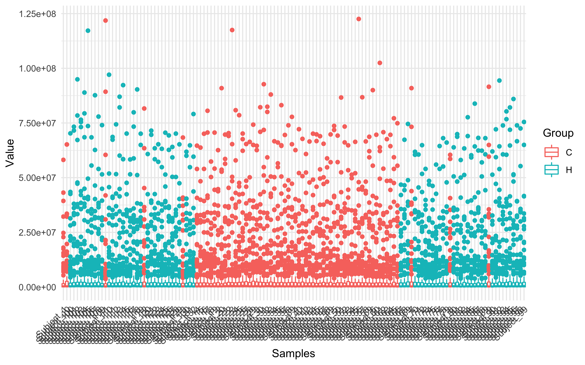
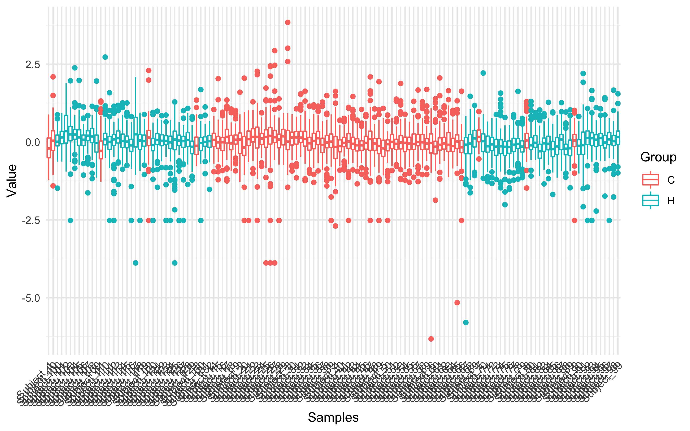
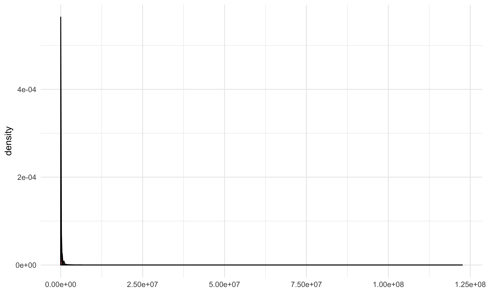
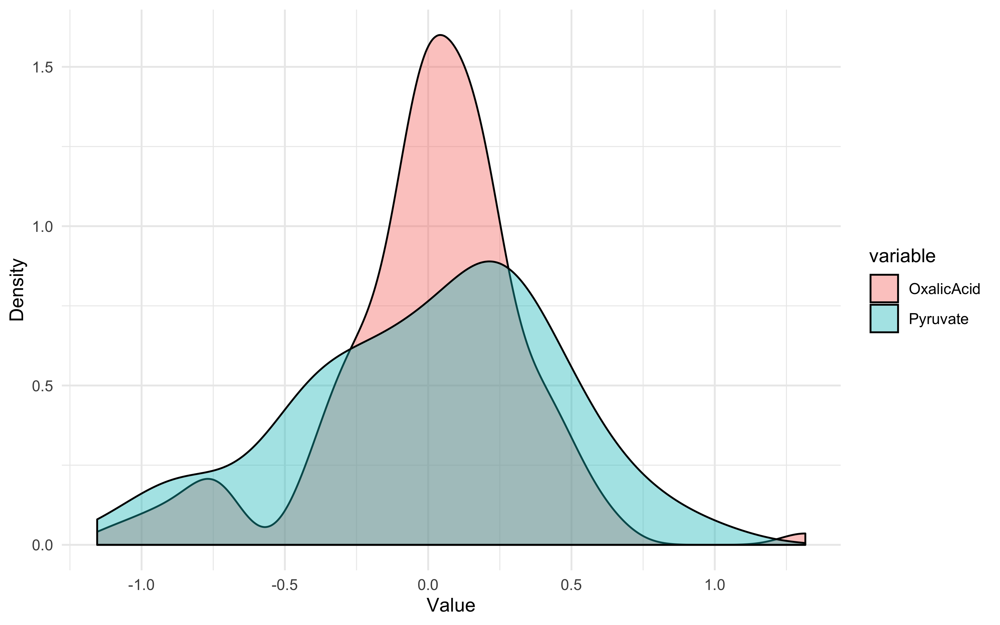

POMA: R Package for Statistical Analysis of Mass Spectrometry Data
Pol Castellano-Escuder
2020-02-04
Source:vignettes/POMA-demo.Rmd
POMA-demo.Rmd
Load or Create an MSnbase::MSnSet() object
Load example data
data(st000284)
st000284
## MSnSet (storageMode: lockedEnvironment)
## assayData: 113 features, 132 samples
## element names: exprs
## protocolData: none
## phenoData
## sampleNames: Subject_1 Subject_2 ... Subject_132 (132 total)
## varLabels: group ageatconsent ... drink_alcohol (5 total)
## varMetadata: labelDescription
## featureData: none
## experimentData: use 'experimentData(object)'
## Annotation:
## - - - Processing information - - -
## MSnbase version: 2.10.1Pre Processing
Missing Value Imputation
Often in mass spectometry analyses we have to deal with some missing values in our data. To face this in POMA just run the following line of code to impute your missings!
imputed <- PomaImpute(st000284, ZerosAsNA = T, RemoveNA = T, cutoff = 20, method = "knn")
imputed
## MSnSet (storageMode: lockedEnvironment)
## assayData: 113 features, 132 samples
## element names: exprs
## protocolData: none
## phenoData
## sampleNames: Subject_1 Subject_2 ... Subject_132 (132 total)
## varLabels: Group ageatconsent ... drink_alcohol (5 total)
## varMetadata: labelDescription
## featureData: none
## experimentData: use 'experimentData(object)'
## Annotation:
## - - - Processing information - - -
## Imputed (knn): Tue Feb 4 14:09:11 2020
## MSnbase version: 2.10.1Note that the object has been updated with imputation information.
Normalization
The next step is the normalization of the data. Again, POMA offers several methods to normalize the data by running just one line of code:
normalized <- PomaNorm(imputed, method = "log_pareto")
normalized
## MSnSet (storageMode: lockedEnvironment)
## assayData: 113 features, 132 samples
## element names: exprs
## protocolData: none
## phenoData
## sampleNames: Subject_1 Subject_2 ... Subject_132 (132 total)
## varLabels: Group ageatconsent ... drink_alcohol (5 total)
## varMetadata: labelDescription
## featureData: none
## experimentData: use 'experimentData(object)'
## Annotation:
## - - - Processing information - - -
## Normalised (log_pareto): Tue Feb 4 14:09:11 2020
## MSnbase version: 2.10.1Note that the object has been updated with normalization information.
Normalization effect
Sometimes, we could be interested in how the normalization process has affected our data?
To answer this question, POMA offers two exploratory functions, PomaNormPlot and PomaDensity, that can help to understand the normalization process.
PomaNormPlot generates boxplots for all samples or features (depending on the group factor) of an MSnSet object. Here, we can compare objects between and after normalization step.
PomaNormPlot(imputed, group = "samples", jitter = FALSE) # data before normalization
## Using ID, Group as id variables
PomaNormPlot(normalized, group = "samples", jitter = FALSE) # data after normalization
## Using ID, Group as id variables
On the other hand, PomaDensity shows the distribution of all features before and after the normalization process.

PomaDensity(normalized, group = "features") # data after normalization
## Using Group as id variables
We can plot only a few variables of the dataset just typing the name/s of the feature/s.
PomaDensity(normalized, group = "features",
feature_name = c("Pyruvate", "OxalicAcid")) # data after normalization
## Warning in if (!(feature_name %in% Biobase::featureNames(data))) {: the
## condition has length > 1 and only the first element will be used
## Using Group as id variables
Statistical Analysis
Score Table
head(multiv_pca$score_data)
## PC1 PC2 PC3 PC4 PC5
## Subject_1 -0.4920 3.2223 -0.4056 -0.9602 -0.1377
## Subject_2 -1.4216 2.5342 -1.5620 -0.3542 3.0973
## Subject_3 2.4304 1.1799 1.0433 -0.3040 0.4411
## Subject_4 -0.7437 3.7469 -2.4490 -1.4468 0.7222
## Subject_5 -0.7866 0.9041 -1.0319 2.5226 -0.9203
## Subject_6 1.3134 2.0314 -3.0247 4.2086 1.3496